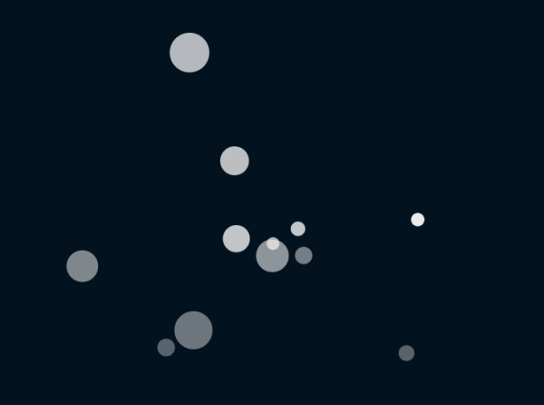

一つずつパーティクルを出す
実行例
 実行結果を見る
ソースコード
TypeScript
解説/アルゴリズム
パーティクルの個々の要素を一定間隔で生成するように調整を行う。
p.draw = () => {
p.background(color.background);
p.noStroke();
if (p.frameCount % interval === 0 && particles.length < maxParticle) {
addParticle();
}
particles.forEach((particle) => {
update(particle);
p.fill(color.fill, particle.opacity);
p.circle(particle.x, particle.y, particle.radius);
});
};
function addParticle(): void {
const vx = p.random(-3, 3);
const vy = p.random(-3, 3);
const radius = p.random(4, 30);
const opacity = p.random(40, 255);
const particle = init(
p.windowWidth / 2,
p.windowHeight / 2,
vx,
vy,
radius,
opacity
);
particles.push(particle);
}
更新用関数の全体コード。
p.frameCount % interval === 0;
intreval フレームおきにオブジェクトを生成する。
particles.length < maxParticle;
時間の経過につれて無尽蔵にオブジェクトの数が増えるので、生成の制限をしておく。